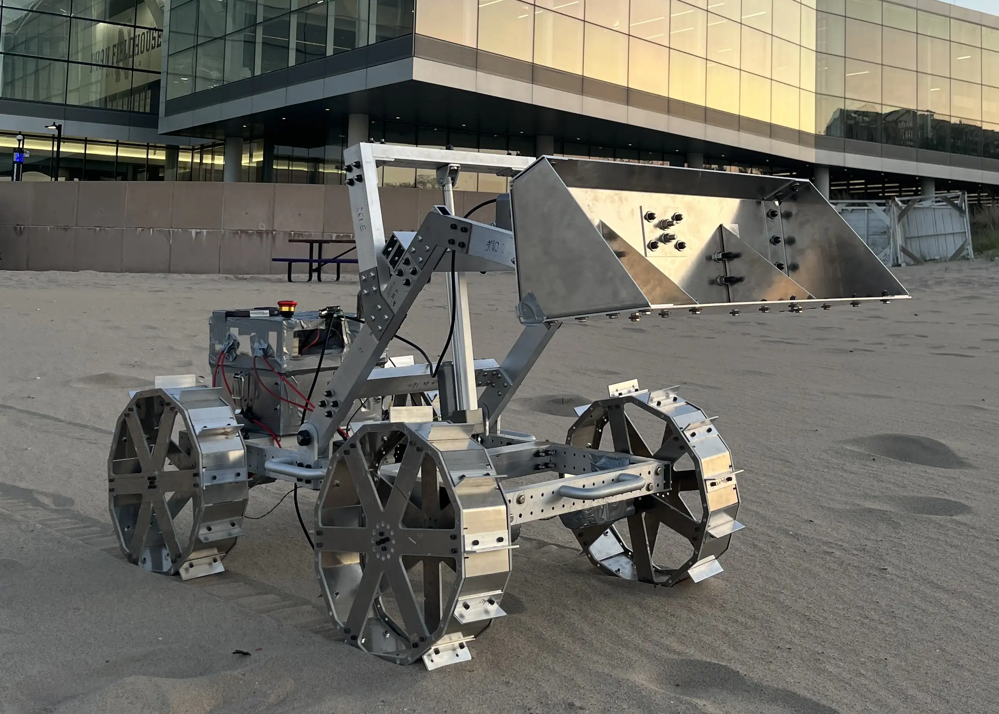
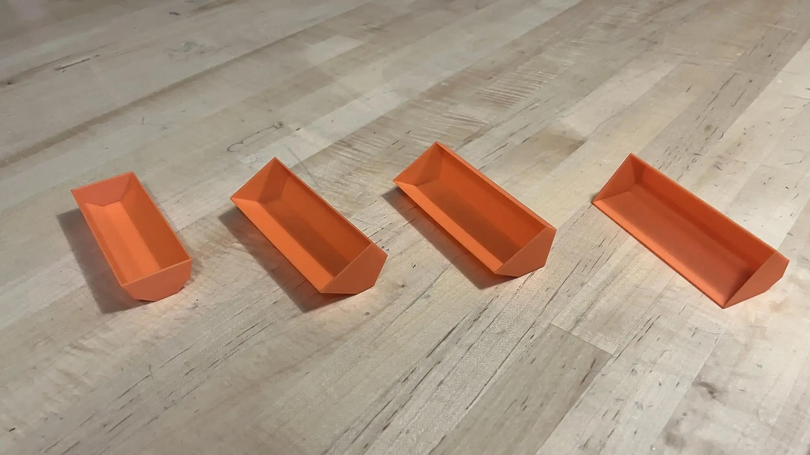
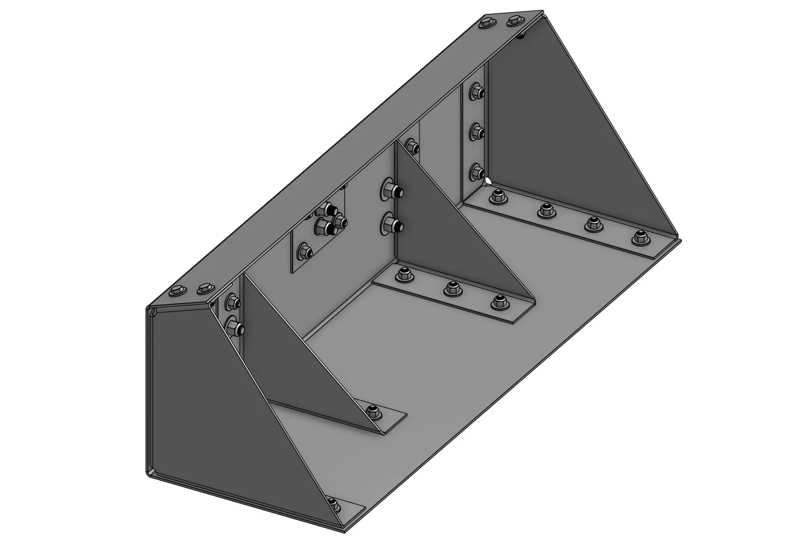
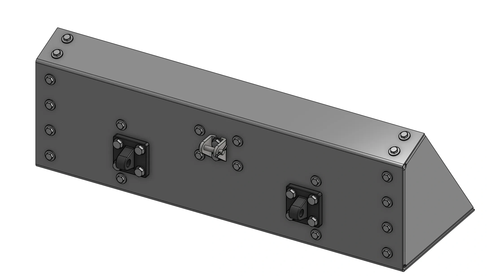
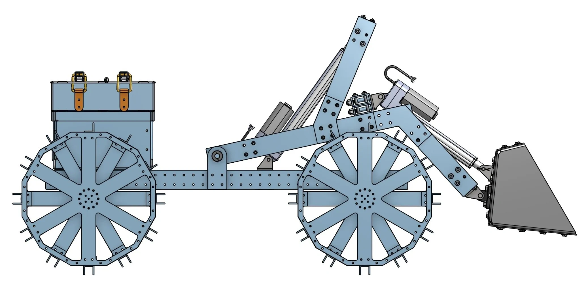
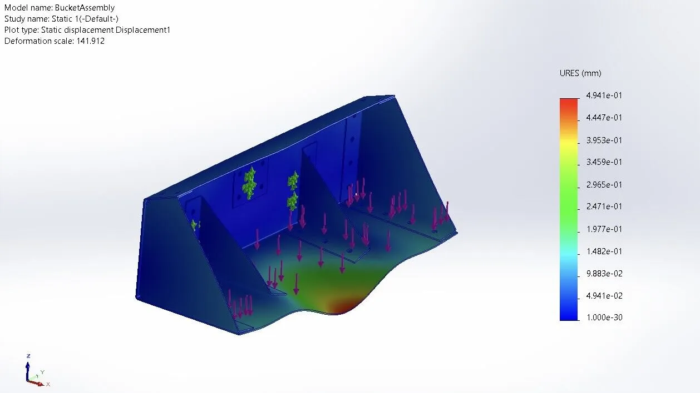
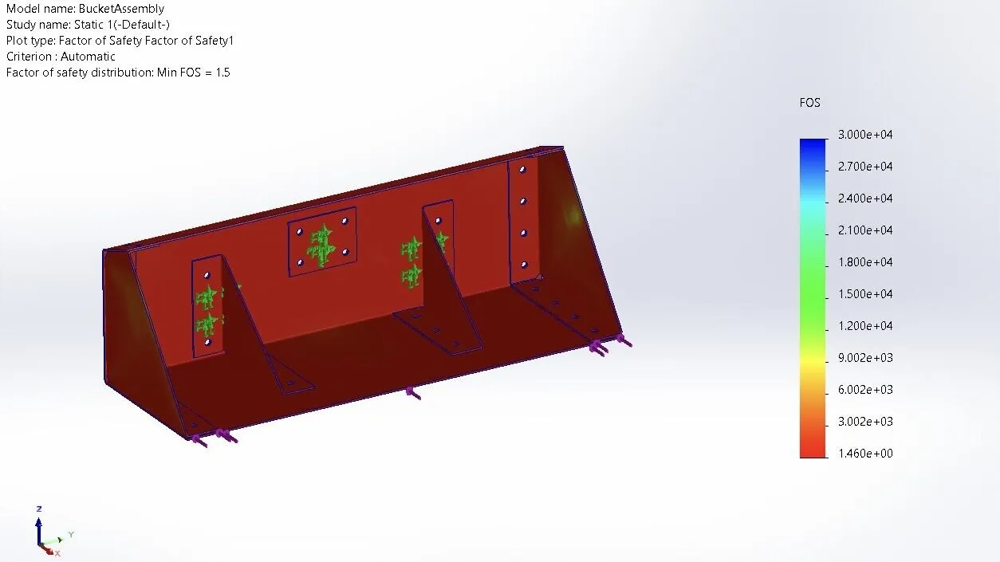
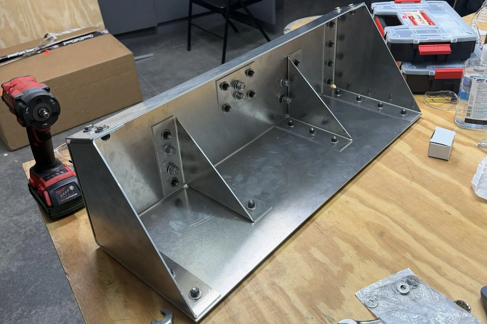
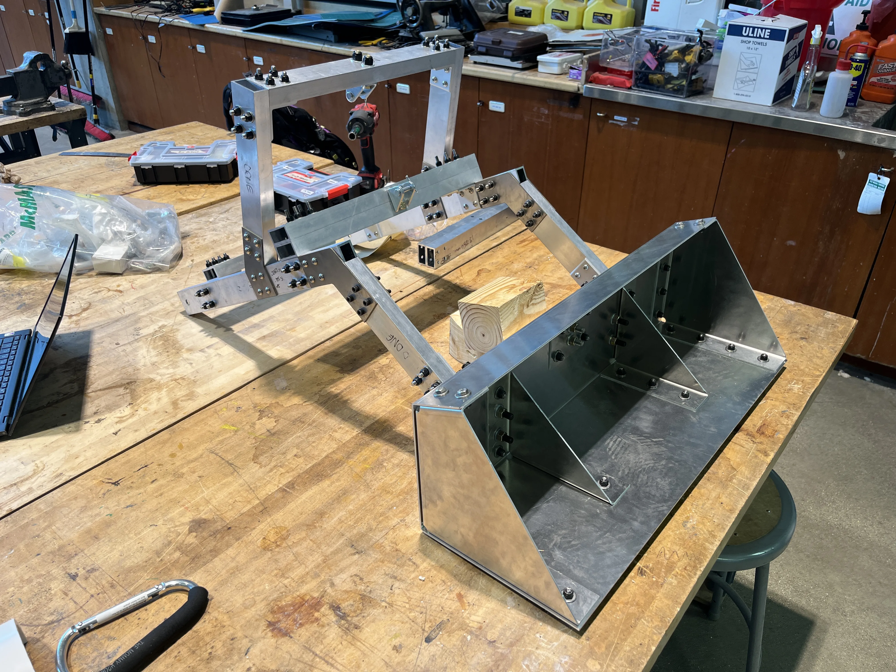
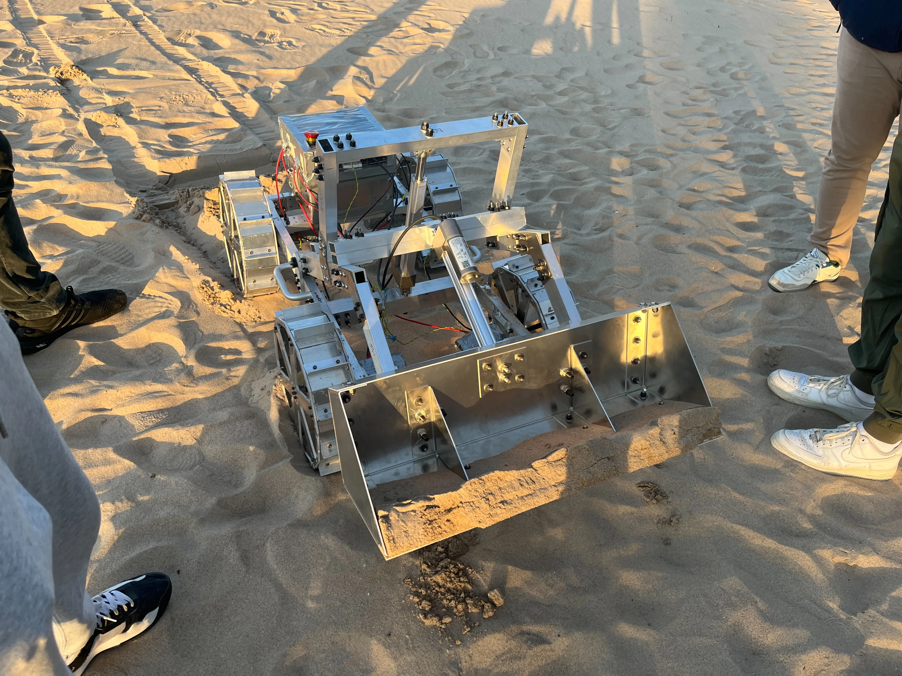

Designed and validated a front-end loader bucket for excavation.

Overview
NASA Lunabotics is an annual competition hosted by NASA in which teams design and build rovers to excavate simulated lunar regolith and deposit it to construct berms. This was Northwestern's first year participating in the competition.
As a member of the team, I was responsible for designing the front-end loader bucket that attaches to the excavation frame. This involved creating multiple design iterations using CAD in Onshape, performing finite element analysis (FEA) in SolidWorks to validate structural integrity under expected loads, and selecting appropriate materials and fasteners for manufacturing. Throughout the process, I presented at design reviews to ensure the bucket's performance and integration were successful. See Fig. 1 for the finished rover testing the bucket on the beach.

I began by creating concept sketches and CAD models of the bucket, exploring different geometries and configurations. I 3D-printed miniature prototypes to evaluate each design (see Fig. 2). After selecting a design and adapting it for bent sheet-metal manufacturing, I modeled it in Onshape using parametric variables to efficiently iterate on dimensions ranging from overall length, width, and height to bolt-hole sizes and flange lengths. I used Onshape's sheet metal tools and sourced fasteners and pivot mounts from McMaster-Carr. See Fig. 3 and Fig. 4 for CAD views of the design. To optimize strength, I incorporated ribs and a reinforced backplate at the linear actuator attachment point. While designing, I communicated with the other members of the excavation team to ensure compatibility with the frame and mount positions. See Fig. 5 for a CAD side view of the bucket integrated into the full rover assembly.



I performed FEA to validate the design under several loading conditions including maximum regolith capacity and peak forces on the front edge during ground penetration. See Fig. 6 and Fig. 7 for FEA results showing displacement and factor of safety, respectively. I coordinated with the excavation team during their frame FEA to cross-check results and confirm the frame could handle the forces transmitted from the bucket.


We outsourced sheet metal fabrication to SendCutSend to ensure the bends were precise before assembling the bucket in-house. I assembled the bucket using the fasteners I selected and lathed cylindrical spacers for the pivot mounts. See Fig. 8 for a photo of the assembled bucket and Fig. 9 for a photo of the bucket attached to the excavation frame. See Fig. 10 for a video demonstrating the bucket scooping motion with a linear actuator.


Although we were eligible to compete, we were unable to participate in the 2026 competition due to timing and logistical constraints. Instead, we tested the bucket on the beach using sand as a regolith substitute and held a rover showcase event for students, faculty, alumni, and sponsors to attend. See Fig. 11 for a photo of the full rover assembly on the beach. For the 2026 – 2027 season, I will be returning as the Lunabotics co-lead.
